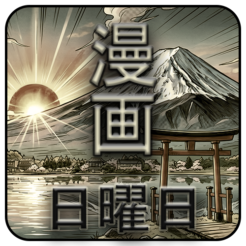
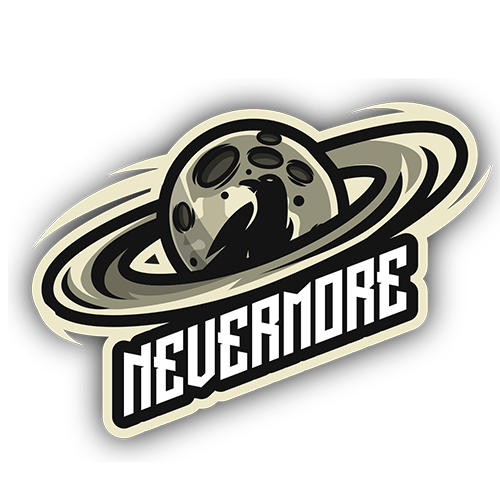
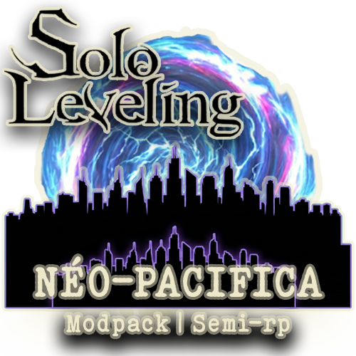

Nos Projets
Au-delà des streams individuels, Nevermore c'est aussi des projets de groupe. De la WebTV à l'Esport, découvrez ce sur quoi on bosse !
Émissions WebTV

Manga Sunday
Le rendez-vous incontournable pour tous les passionnés de culture nippone ! Dans cette émission talk-show, l'équipe se réunit pour présenter, débattre et analyser des œuvres issues du milieu manga et de l'animation. Que ce soit pour des classiques intemporels ou des pépites méconnues, on décortique tout avec passion (et un peu de mauvaise foi).
Pôle Esport

Équipe Overwatch
Le cœur originel du projet Nevermore. Bien que notre format ait évolué vers la WebTV, notre ADN compétitif reste intact. Notre roster Overwatch continue de s'entraîner et de s'aligner sur divers tournois pour porter nos couleurs au plus haut niveau.
Découvrir le Roster Esport →Projets Communautaires

Serveur Minecraft : Solo Leveling
Un projet ambitieux développé et géré de A à Z par Fawks. Ce serveur Minecraft propose une expérience Semi-RP unique, basée sur un modpack entièrement personnalisé. Plongez dans l'univers impitoyable de Solo Leveling, affrontez des donjons, montez en grade et forgez votre propre légende aux côtés de la communauté.
Rejoindre le Discord dédié →